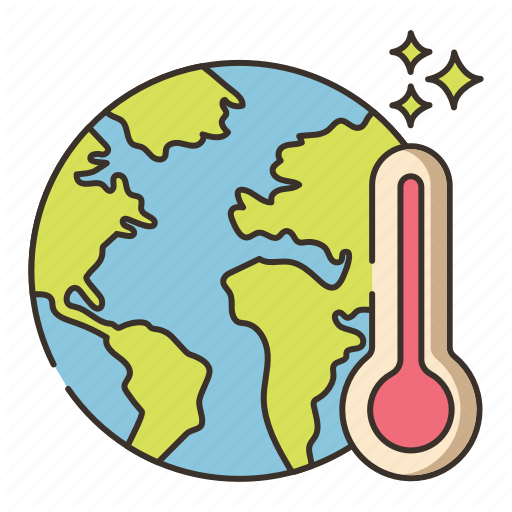

Inicio

¿Que es el calentamiento global?
El “efecto invernadero” es el calentamiento que se produce cuando ciertos gases de la atmósfera de la Tierra retienen el calor. Estos gases dejan pasar la luz pero mantienen el calor como las paredes de cristal de un invernadero. En primer lugar,
la luz solar brilla en la superficie terrestre, donde es absorbida y, a continuación, vuelve a la atmósfera en forma de calor. En la atmósfera, los gases de invernadero retienen parte de este calor y el resto se escapa al espacio. Cuantos
más gases de invernadero, más calor es retenido.